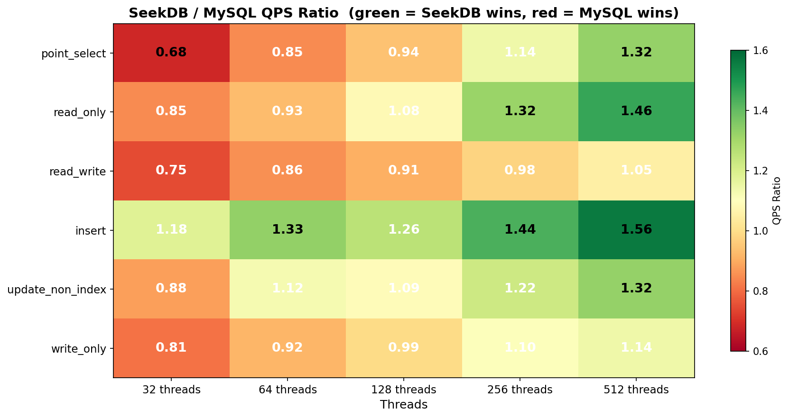
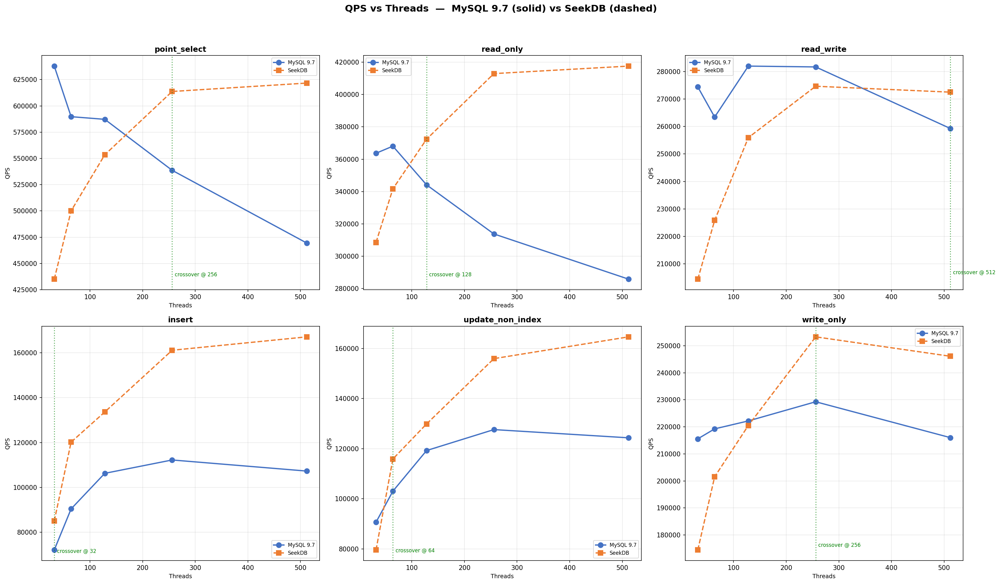
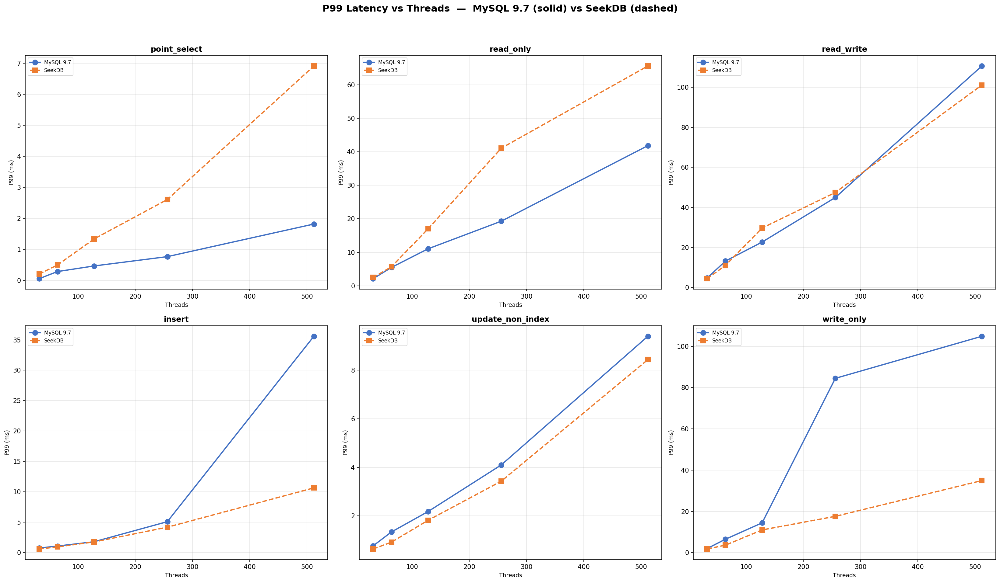
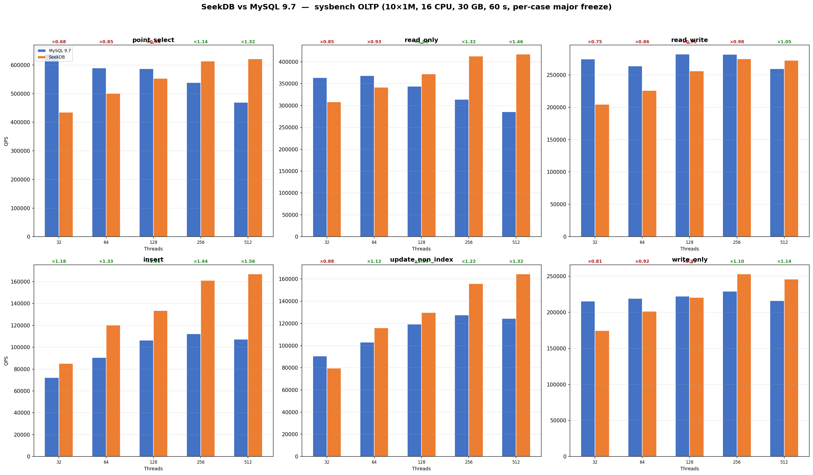
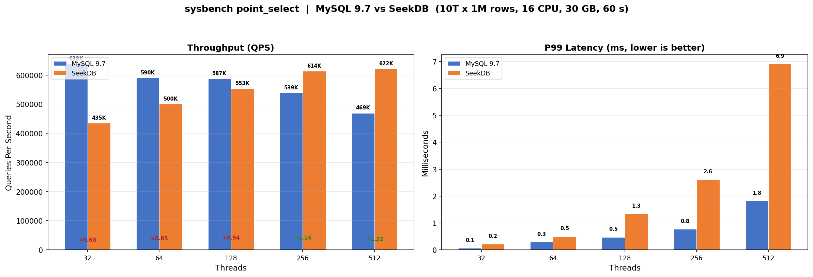
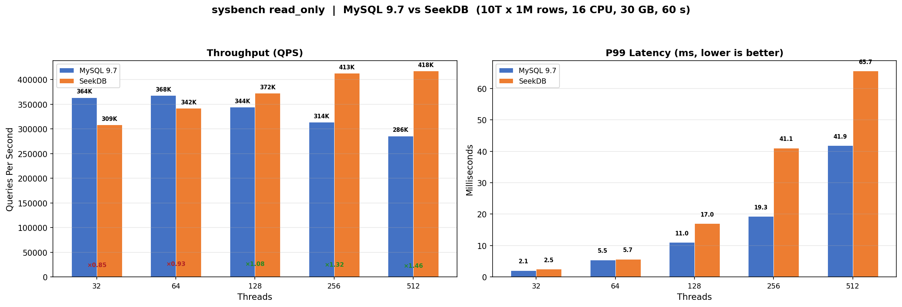
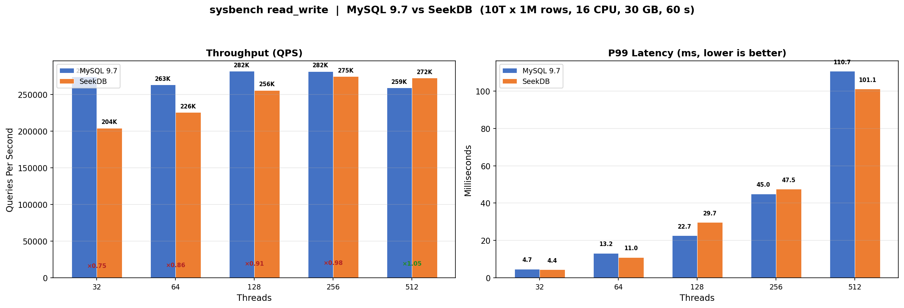
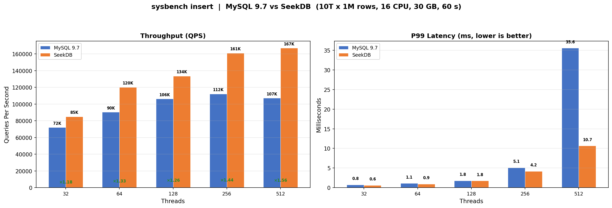
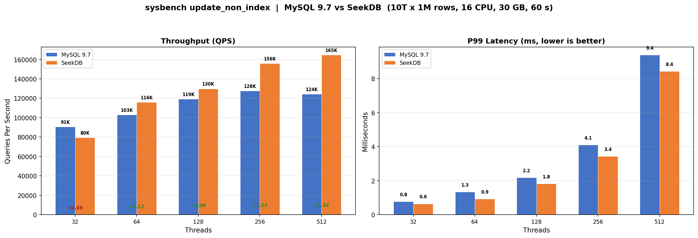
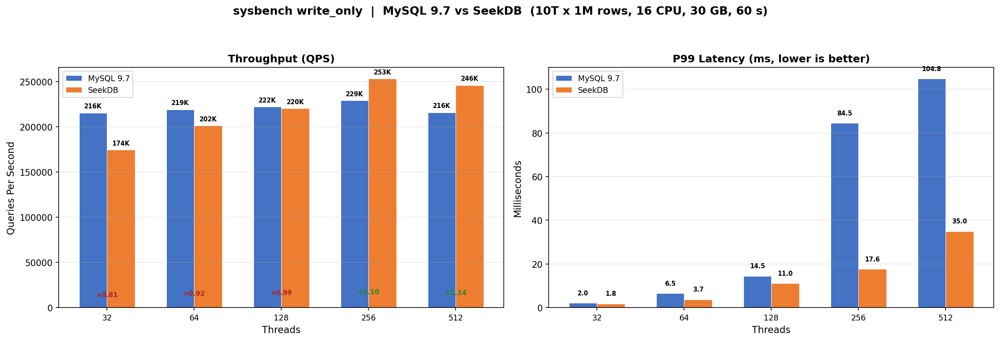

Green = SeekDB wins, Red = MySQL wins. As threads increase, the green area expands. At 512 threads all workloads turn green.

Solid blue = MySQL 9.7, Dashed orange = SeekDB. Green dotted lines mark crossover where SeekDB overtakes MySQL.

Solid blue = MySQL (exponential growth with threads), Dashed orange = SeekDB (linear growth). Note the dramatic spike for MySQL write workloads at 256–512 threads.

SeekDB/MySQL QPS ratio shown above each thread group (green >1.0 = SeekDB wins)

point_select — MySQL leads at low concurrency; SeekDB overtakes at 256 threads (×1.14 → ×1.32)

read_only — SeekDB overtakes at 128 threads, leads by 46% at 512 threads

read_write — Gap shrinks from 25% to 3%; SeekDB overtakes at 512 threads

insert — SeekDB dominates at all thread levels (+18% to +56%)

update_non_index — SeekDB overtakes at 64 threads; 512-thread P99 8.43 ms vs MySQL 9.39 ms

write_only — SeekDB overtakes at 256 threads. MySQL P99 explodes to 104 ms; SeekDB stays at 35 ms
| Workload | Threads | MySQL QPS | SeekDB QPS | Ratio | MySQL P99 | SeekDB P99 |
|---|---|---|---|---|---|---|
| point_select | 32 | 637,856 | 435,099 | 0.68 | 0.06ms | 0.21ms |
| 64 | 589,720 | 500,117 | 0.85 | 0.29ms | 0.50ms | |
| 128 | 587,200 | 553,491 | 0.94 | 0.47ms | 1.34ms | |
| 256 | 538,686 | 613,710 | 1.14 | 0.77ms | 2.61ms | |
| 512 | 469,425 | 621,703 | 1.32 | 1.82ms | 6.91ms | |
| read_only | 32 | 363,695 | 308,579 | 0.85 | 2.11ms | 2.48ms |
| 64 | 368,079 | 341,705 | 0.93 | 5.47ms | 5.67ms | |
| 128 | 344,159 | 372,368 | 1.08 | 11.04ms | 17.01ms | |
| 256 | 313,802 | 412,936 | 1.32 | 19.29ms | 41.10ms | |
| 512 | 285,853 | 417,570 | 1.46 | 41.85ms | 65.65ms | |
| read_write | 32 | 274,388 | 204,434 | 0.75 | 4.74ms | 4.41ms |
| 64 | 263,429 | 225,824 | 0.86 | 13.22ms | 11.04ms | |
| 128 | 281,973 | 255,938 | 0.91 | 22.69ms | 29.72ms | |
| 256 | 281,672 | 274,644 | 0.97 | 44.98ms | 47.47ms | |
| 512 | 259,262 | 272,494 | 1.05 | 110.66ms | 101.13ms | |
| insert | 32 | 72,167 | 85,089 | 1.18 | 0.75ms | 0.60ms |
| 64 | 90,446 | 120,200 | 1.33 | 1.08ms | 0.94ms | |
| 128 | 106,291 | 133,625 | 1.26 | 1.79ms | 1.76ms | |
| 256 | 112,243 | 161,131 | 1.44 | 5.09ms | 4.18ms | |
| 512 | 107,295 | 167,105 | 1.56 | 35.59ms | 10.65ms | |
| update_non_index | 32 | 90,631 | 79,561 | 0.88 | 0.77ms | 0.64ms |
| 64 | 103,012 | 115,874 | 1.13 | 1.34ms | 0.92ms | |
| 128 | 119,239 | 129,859 | 1.09 | 2.18ms | 1.82ms | |
| 256 | 127,604 | 155,940 | 1.22 | 4.10ms | 3.43ms | |
| 512 | 124,322 | 164,637 | 1.32 | 9.39ms | 8.43ms | |
| write_only | 32 | 215,557 | 174,486 | 0.81 | 2.03ms | 1.82ms |
| 64 | 219,246 | 201,534 | 0.92 | 6.55ms | 3.68ms | |
| 128 | 222,181 | 220,482 | 0.99 | 14.46ms | 11.04ms | |
| 256 | 229,264 | 253,269 | 1.10 | 84.47ms | 17.63ms | |
| 512 | 216,001 | 246,089 | 1.14 | 104.84ms | 34.95ms |
| Threads | Leader | Summary |
|---|---|---|
| 32 | MySQL (mostly) | MySQL leads in 5/6 workloads; SeekDB wins insert only |
| 64 | Mixed | SeekDB overtakes insert + update_non_index; MySQL still ahead in reads |
| 128 | Tipping point | SeekDB overtakes read_only; MySQL throughput begins declining |
| 256 | SeekDB | SeekDB overtakes point_select + write_only; MySQL latency explodes (write_only P99 84 ms) |
| 512 | SeekDB | SeekDB wins all 6 workloads. MySQL write P99 >100 ms; SeekDB write P99 <35 ms |
{kind=link}
{kind=link}
{kind=link}
{kind=link}
{kind=link}
{kind=link}